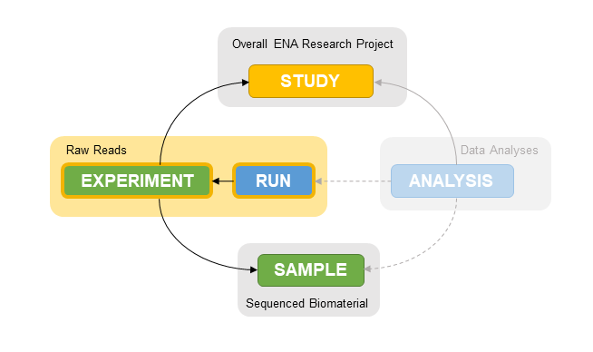

library(S7)
library(checkmate)tl;dr
This week I learned about R’s new S7 object oriented programming (OOP) system by experimenting with classes that represent the main metadata entities of a next-generation sequencing experiment.
Introduction
This week, version 0.1.0 of the S7 R package was released on CRAN. Designed by a consortium spanning major R user communities it is designed to combine the simplicity of the S3 object oriented programming system with the control offered by S4. The authors have provided several vignettes, a great starting point for my first steps with S7.
Next-generation sequencing experiments
Next generation sequencing data is publicly available from multiple repositories, including The European Nucleotide Archive (ENA). Each dataset contains information about the overall study, the analyzed samples, the sequencing experiment (e.g. libraries) and the individual runs that generated the raw reads 1.

Understanding the relationships between these entities is critical for interpreting and (re-)using the sequencing data. In short:
- One or more runs are part of an experiment.
- One or more experiments are part of a study.
- One or more experiments are associated with a sample.
Let’s represent these entities - and their relationships - as a set of S7 classes!
Defining S7 classes
An S7 class is defined with the new_class function, which defines its properties (e.g. corresponding to the slots of an S4 class).
First, we define a basic Entity class with properties that are shared across all entities in our model. Specifically, we define the accession and name properties, each as a scalar character.
Entity <- new_class(
"Entity",
properties = list(
accession = class_character,
name = class_character
)
)By convention, the output of the new_class calls is assigned to an object with the same name.
The Run class
Let’s start by defining the Run class as a container for metadata about each sequencing run. We also specify a validation function to ensure that the read_length is a positive integers (if it is provided).
Run <- new_class(
"Run",
parent = Entity,
properties = list(
paired_end = new_property(class_logical, default = FALSE),
read_length = class_integer,
qc_pass = class_logical
),
validator = function(self) {
if (length(self@name) == 0) {
"@name must be set"
} else if (length(self@read_length) > 0 &&
!checkmate::test_count(self@read_length)) {
"@read_length must a positive integer"
}
}
)Calling the class name (without parentheses) provides basic information about its definition:
Run<S7_class>
@ name : Run
@ parent: <Entity>
@ properties:
$ accession : <character>
$ name : <character>
$ paired_end : <logical>
$ read_length: <integer>
$ qc_pass : <logical> Calling the constructor method (with parentheses) creates a new instance of the class, and the default print method lists its properties.
first_run <- Run(name = "first run", accession = "r123", read_length = 100L,
qc_pass = TRUE)
first_run<Run>
@ accession : chr "r123"
@ name : chr "first run"
@ paired_end : logi FALSE
@ read_length: int 100
@ qc_pass : logi TRUEGetter and setter methods are defined automatically and can be accessed with the @ operator:
first_run@paired_end <- TRUE
first_run<Run>
@ accession : chr "r123"
@ name : chr "first run"
@ paired_end : logi TRUE
@ read_length: int 100
@ qc_pass : logi TRUELet’s create a second run, this time with paired-end reads:
second_run <- Run(name = "second run", accession = "r234", paired_end = TRUE,
qc_pass = FALSE)
second_run<Run>
@ accession : chr "r234"
@ name : chr "second run"
@ paired_end : logi TRUE
@ read_length: int(0)
@ qc_pass : logi FALSEThe Sample class
Next up, a class to hold metadata about each biological sample.
Sample <- new_class(
"Sample",
parent = Entity,
properties = list(
description = class_character,
species = new_property(class_character, default = "Homo sapiens"),
attributes = class_list,
external_ids = class_list
)
)The Experiment class
Let’s define a container for Experiment metadata in a similar way. In addition to scalar properties, an Experiment also accepts a list of one or more Run objects, e.g. the sequencing runs associated with this experiment. Finally, we add the sample property to represent the biological sample of origin.
Experiment <- new_class(
"Experiment",
parent = Entity,
properties = list(
library_strategy = class_character,
library_selection = class_character,
library_source = class_character,
platform = class_character,
model = class_character,
runs = class_list,
sample = Sample
),
validator = function(self) {
if (length(self@name) == 0) {
"@name must be set"
} else if (length(self@sample) == 0) {
"@sample is required"
} else if (length(self@sample@name) == 0) {
"@sample@name is required"
} else if (!checkmate::test_list(self@runs, types = "Run")) {
"@runs must only contain instances of class `Run`"
}
}
)The runs = class_list property definition does not specify the types of elements the list can contain, so we add a custom validator that requires all elements of runs to be instances of our previously defined Run S7 class.2
Note
We could also have defined an additional calls, e.g. RunList, and delegate validating that only Run objects are included. That would keep the code more modular, especially if the list of validation rules for the Experiment class increases. But it would also come at the cost of increasing the number of classes and the complexity of the code base.
We instantiate our first experiment and include our two Run objects:
first_sample <- Sample(name = "first sample")
first_exp <- Experiment(
name = "first experiment",
accession = "exp567",
platform = "Illumina",
model = "NovaSeq 6000",
runs = list(first_run, second_run),
sample = first_sample
)
first_exp<Experiment>
@ accession : chr "exp567"
@ name : chr "first experiment"
@ library_strategy : chr(0)
@ library_selection: chr(0)
@ library_source : chr(0)
@ platform : chr "Illumina"
@ model : chr "NovaSeq 6000"
@ runs :List of 2
.. $ : <Run>
.. ..@ accession : chr "r123"
.. ..@ name : chr "first run"
.. ..@ paired_end : logi TRUE
.. ..@ read_length: int 100
.. ..@ qc_pass : logi TRUE
.. $ : <Run>
.. ..@ accession : chr "r234"
.. ..@ name : chr "second run"
.. ..@ paired_end : logi TRUE
.. ..@ read_length: int(0)
.. ..@ qc_pass : logi FALSE
@ sample : <Sample>
.. @ accession : chr(0)
.. @ name : chr "first sample"
.. @ description : chr(0)
.. @ species : chr "Homo sapiens"
.. @ attributes : list()
.. @ external_ids: list()Custom print methods
At this point, the output default print method for our class becomes a little unwieldy, as displaying information about all properties of the Experiment, its Sample and each of the associated Runs returns a lot of information. Let’s define a custom print method for the Run class that shows a concise summary instead.
.run_message <- function(x) {
sprintf(
"%s Run%s%s %s",
ifelse(x@paired_end, "Paired-end", "Single-end"),
ifelse(length(x@name) > 0, paste0(" '", x@name, "'"),""),
ifelse(length(x@accession) > 0, paste0(" (", x@accession, ")"), ""),
ifelse(length(x@qc_pass) == 0, "❓", ifelse(x@qc_pass, "✅","❌")
)
)
}
method(print, Run) <- function(x) {
cat(.run_message(x))
}
first_runPaired-end Run 'first run' (r123) ✅
Note
Dynamically choosing between the three symbols with nested ifelse statements is confusing - the dplyr::chase_when() function offers a nicer interface.
Great, that’s much shorter. Now we need a print method for the Experiment class as well:
.experiment_msg <- function(x) {
sprintf(
"Experiment%s%s with %s runs.",
ifelse(length(x@name) > 0, paste0(" '", x@name, "'"),""),
ifelse(length(x@accession) > 0, paste0(" (", x@accession, ")"), ""),
length(x@runs)
)
}
method(print, Experiment) <- function(x) {
msg <- .experiment_msg(x)
for (run in x@runs) {
msg <- paste0(msg, "\n- ", .run_message(run))
}
cat(msg)
}Now our first experiment is summarized as
first_expExperiment 'first experiment' (exp567) with 2 runs.
- Paired-end Run 'first run' (r123) ✅
- Paired-end Run 'second run' (r234) ❌Let’s create a second experiment before we move on:
second_sample <- Sample(name = "second sample")
second_exp <- Experiment(
name = "second experiment",
accession = "exp628",
platform = "Illumina",
model = "NovaSeq 6000",
runs = list(first_run),
sample = second_sample
)The Study class
Now that we have defined classes for all of the entities that constitute an NGS study, we finish by assembling them into a Study class. As before, we also define a custom print method to summarize it.
Study <- new_class(
"Study",
parent = Entity,
properties = list(
primary_id = class_character,
secondary_id = class_character,
description = class_character,
abstract = class_character,
timestamp = new_property(class_POSIXct, default = as.POSIXct(Sys.time())),
experiments = class_list
),
validator = function(self) {
if (length(self@name) == 0) {
"@name must be set"
} else if (!checkmate::test_list(self@experiments, types = "Experiment")) {
"@experiments must only contain instances of class `Experiment`"
}
}
)
.study_msg <- function(x) {
sprintf(
"Study%s%s with %s Experiment%s",
ifelse(length(x@name) > 0, paste0(" '", x@name, "'"),""),
ifelse(length(x@accession) > 0, paste0(" (", x@accession, ")"), ""),
length(x@experiments),
ifelse(length(x@experiments) > 1, "s", "")
)
}
method(print, Study) <- function(x) {
msg <- .studyt_msg(x)
for (experiment in x@experiments) {
msg <- paste0(msg, "\n- ", .experiment_msg(experiment))
}
cat(msg)
}first_study <- Study(name = "first study",
experiments = list(first_exp, second_exp))
first_study@experiments[[1]]
Experiment 'first experiment' (exp567) with 2 runs.
- Paired-end Run 'first run' (r123) ✅
- Paired-end Run 'second run' (r234) ❌
[[2]]
Experiment 'second experiment' (exp628) with 1 runs.
- Paired-end Run 'first run' (r123) ✅Dynamic methods
Each study contains a nested set of Experiment, Sample and Run objects. To access their properties, we redefine the Study class by adding computed properties, e.g. a runs property that will return a list of Runs from all experiments:
Study <- new_class(
"Study",
parent = Entity,
properties = list(
primary_id = class_character,
secondary_id = class_character,
description = class_character,
abstract = class_character,
timestamp = new_property(class_POSIXct, default = as.POSIXct(Sys.time())),
experiments = class_list,
runs = new_property(
getter = function(self) {
exp_runs <- setNames(
lapply(self@experiments, \(x) x@runs),
vapply(self@experiments, \(x) x@name, FUN.VALUE = character(1)))
}
)
),
validator = function(self) {
if (length(self@name) == 0) {
"@name must be set"
} else if (!checkmate::test_list(self@experiments, types = "Experiment")) {
"@experiments must only contain instances of class `Experiment`"
}
}
)Now, the study’s @runs property returns a nested list with one element for each experiment (and all runs for each experiment).
second_study <- Study(name = "first study",
experiments = list(first_exp, second_exp))
exp_runs <- second_study@runs
str(exp_runs)List of 2
$ first experiment :List of 2
..$ : <Run>
.. ..@ accession : chr "r123"
.. ..@ name : chr "first run"
.. ..@ paired_end : logi TRUE
.. ..@ read_length: int 100
.. ..@ qc_pass : logi TRUE
..$ : <Run>
.. ..@ accession : chr "r234"
.. ..@ name : chr "second run"
.. ..@ paired_end : logi TRUE
.. ..@ read_length: int(0)
.. ..@ qc_pass : logi FALSE
$ second experiment:List of 1
..$ : <Run>
.. ..@ accession : chr "r123"
.. ..@ name : chr "first run"
.. ..@ paired_end : logi TRUE
.. ..@ read_length: int 100
.. ..@ qc_pass : logi TRUEConclusions
After working with the S4 OOP for a while, the new S7 package was a pleasant surprise. There was less boilerplate code to write, and the definition of classes and methods seems straightforward. I noticed a few issues, which had also been noted by other R users:
- As pointed out by Kevin Kunzmann in this github issue the ability to define additional constraints for properties within e.g.
class_characterwould be a welcome addition. I found myself writing custom validators to check whether a property had been set (e.g.length(x@name) > 0). - The
Entityclass defines the@nameand@accessionproperties, along with a validator for the former. Unfortunately, that validator is not inherited by the child classes, as noted by Jamie Lendrum in this github issue, so I had to repeat the same code in each class definition.
Reproducibility
Session Information
sessioninfo::session_info("attached")─ Session info ───────────────────────────────────────────────────────────────
setting value
version R version 4.3.1 (2023-06-16)
os macOS Ventura 13.5.1
system aarch64, darwin20
ui X11
language (EN)
collate en_US.UTF-8
ctype en_US.UTF-8
tz America/Los_Angeles
date 2023-08-30
pandoc 3.1.1 @ /Applications/RStudio.app/Contents/Resources/app/quarto/bin/tools/ (via rmarkdown)
─ Packages ───────────────────────────────────────────────────────────────────
! package * version date (UTC) lib source
P checkmate * 2.2.0 2023-04-27 [?] CRAN (R 4.3.0)
P S7 * 0.1.0 2023-08-24 [?] CRAN (R 4.3.0)
[1] /Users/sandmann/repositories/blog/renv/library/R-4.3/aarch64-apple-darwin20
[2] /Users/sandmann/Library/Caches/org.R-project.R/R/renv/sandbox/R-4.3/aarch64-apple-darwin20/ac5c2659
P ── Loaded and on-disk path mismatch.
──────────────────────────────────────────────────────────────────────────────
This work is licensed under a Creative Commons Attribution 4.0 International License.
Footnotes
I am a big fan of the checkmate R package, which provides numerous useful functions to assert / check / test objects.↩︎